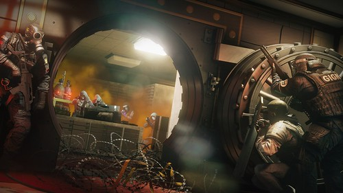
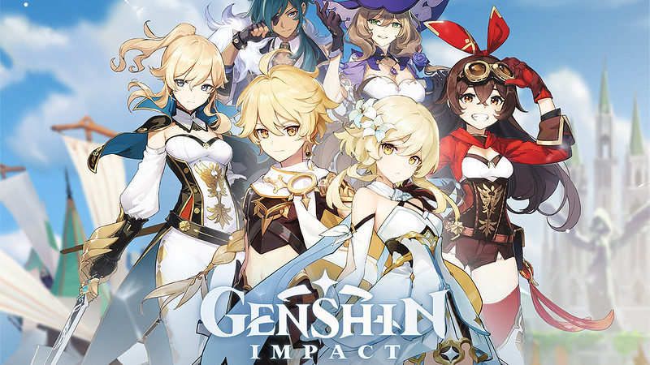

| Victor's Website |
|---|
Gaming |
| About Me |
| My Cats |
| Hobbies |
| Gaming |
| References/Citations |
|
Author: Victor Zhang, Date Published: 11/17/20 Gaming?Yes, as mentioned before in the hobbies page gaming is one of my favourite things to do especially with friends. The only problem is my hardware restrictions that only allow me to play less graphical demanding games. On this page I will show you 2 of the games that I like to play as well as the details of that game:Tom Clancy's Rainbow Six SiegeRainbow Six Siege is an online multiplayer tactical First Person Shooter (FPS) developed by Ubisoft Montreal based on sieging a building with operators from modern military special operations forces from around the globe (like the Navy Seals, S.A.S, GIGN, and others). In the standard gamemode there are two teams of five, one attacking an objective (usually its either securing an area, planting a device, or securing a hostage) , and one defending the objective. A team wins by either eliminating all the opposing forces or defending/capturing the objective. Friendly fire is enabled so you can hurt your teammates (you will usually receive a punishment if you do so). I enjoy playing this game because in siege (that's what the player base calls it) you can use the very destructible environment and the different gadgets each operator carries to be as creative as you can with fulfilling your objective. In order to be good at siege you need to have good reaction time, aim, as well as being able to process the events that are happening around you as quickly as possible and act off of that. The thing about siege is that every round is different and thats what prevents people from getting bored, there are lots of updates and new content for players to discover new ways to work with that content. Rainbow Six Siege was officially released on December 1st 2015, as of February 2019 siege reached 45 million players across all platforms meaning that even after 5 years it was still able to put out content that kept old players and attracted new players. Siege is now playable on PC, Xbox, and Playstation, it will also be coming to the next generation of consoles like the PS5 and Xbox Series X. Rainbow Six Siege, Photo: pressakey.com, find the photo here Genshin ImpactGenshin Impact is a 3D free to play open-world Role Playing Game (RPG) made by Chinese company Mihoyo, takes place in the world of Teyvat where you are a traveler from another world who lost your sibling when you landed. Your objective is to find your sister by engaging with the people of this world. The game was fully released on September 18th 2020 so it still has ways to go. Besides doing the story quests this game involves collecting and building a team of characters to fight the monsters of Teyvat like the common foes such as Hillichurls (a humanoid type beast) and slimes, the bigger foes and mini bosses ranging from aggressive flowers that hide in the ground to elemental mages with hard to break shields, and the big bosses like Dvalin the dragon (aka Stormterror) and Lupus Boreas, The Dominator of Wolves. Each character will have an elemental affiliation due to s special power called a "vision", this allows for elemental reactions when 2 elements meet further expanding the tactics needed to build a good team. Current elements include Hydro (Water), Pyro (Fire), Electro (Electric), Cryo (Ice), Anemo (Wind), Geo (Rock) and soon to be released Dendro (Nature/Plant). There are also 5 weapon types which are polearm (spear), sword, claymore (bigger sword), bow and catalyst (ranged magic), each one with it's own attack and playstyles. This game uses a gacha system which means you have to get characters by something like rolling a dice, so you will have to keep rolling to get the character you want but it costs resources to roll. There are so many more things that contribute to how each character can become a viable member of your party (your party is comprised of 4 of your characters) but that is just one of the ways that this game requires knowledge and dedication. It also has a co-op function which means you can join other people's worlds and do quests or fight bosses with them which is nice if you have friends that play the game as well. One last mention would be that this game has amazing music. Composed by Yu-Peng Chen, each piece really describes the area around you and immerses you into the region and the scenario. It is playable on PC, Mobile, PS4, and soon on Nintendo Switch. Genshin Impact, Photo: PlayStation.Blog, find the photo here |